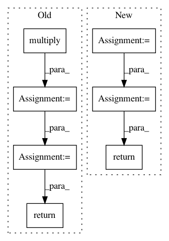

e91a9941d0ee6d1198e4b05bbd39ce16b5c0d569,ml/rl/training/discrete_action_trainer.py,DiscreteActionTrainer,get_max_q_values,#DiscreteActionTrainer#Any#Any#Any#,137
Before Change
)
if possible_next_actions is not None:
mask = np.multiply(
np.logical_not(possible_next_actions),
self.ACTION_NOT_POSSIBLE_VAL
)
q_values += mask
return np.max(q_values, axis=1, keepdims=True)
def get_q_values(
self, states: np.ndarray, actions: np.ndarray
) -> np.ndarray:
After Change
// Set the q values of impossible actions to a very large negative
// number.
inverse_pna = C2.ConstantFill(
possible_actions,
value=1.0,
)
inverse_pna = C2.Sub(
inverse_pna,
possible_actions,
)
inverse_pna = C2.Mul(
inverse_pna,
self.ACTION_NOT_POSSIBLE_VAL,
broadcast=1,
)
q_values = C2.Add(q_values, inverse_pna)
q_values_max = C2.ReduceBackMax(
q_values,
num_reduce_dims=1,
)
return C2.ExpandDims(q_values_max, dims=[1])
def get_q_values_all_actions(
self,
states: str,
In pattern: SUPERPATTERN
Frequency: 3
Non-data size: 7
Instances
Project Name: facebookresearch/Horizon
Commit Name: e91a9941d0ee6d1198e4b05bbd39ce16b5c0d569
Time: 2018-02-27
Author: jjg@fb.com
File Name: ml/rl/training/discrete_action_trainer.py
Class Name: DiscreteActionTrainer
Method Name: get_max_q_values
Project Name: SpiNNakerManchester/sPyNNaker
Commit Name: 3782cc530a2914543e4f86fc727a9021defc0342
Time: 2017-10-30
Author: christian.brenninkmeijer@manchester.ac.uk
File Name: spynnaker/pyNN/models/neuron/synapse_types/synapse_type_exponential.py
Class Name:
Method Name: get_exponential_decay_and_init
Project Name: f90/Wave-U-Net
Commit Name: fe50c52a31b3231a1777f14eb6131a819f082fc8
Time: 2019-01-24
Author: daniel@dstoller.net
File Name: Models/UnetSpectrogramSeparator.py
Class Name: UnetSpectrogramSeparator
Method Name: get_output